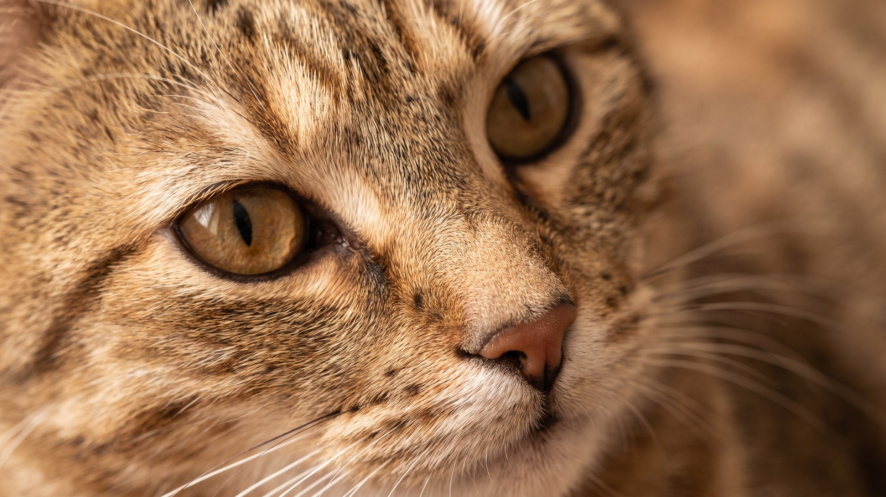

Кошка узнаёт хозяина после двух недель разлуки, помнит, что поцарапалась об угол шкафа, и годами обходит конкретный стул. Как устроена эта память и чем она отличается от человеческой? Разбираем виды памяти у кошек, что они запоминают надолго и как это объясняет привычки в поведении.
🐾 Хотите понять, что кошка говорит вам?
Опишите ситуацию или пришлите видео в AnimaLife — AI разберёт поведение вашего питомца и подскажет, что делать. Бесплатно, ответ за минуту.
Разобрать поведение → Разобрать в MAX →
У вас iPhone? AnimaLife есть в App Store
У кошек работают те же базовые типы памяти, что у большинства млекопитающих.
Долгосрочная память. Запоминает то, что повторялось много раз или было связано с сильным переживанием. Кошки помнят людей, с которыми жили, через месяцы и годы. По данным исследований Университета Аояма (Токио, 2017), кошки узнают голос хозяина после расставания, даже если реагируют не так заметно, как собаки.
Рабочая (кратковременная) память. Хранит информацию секунды и минуты. По результатам тестов на отслеживание объекта, кошки удерживают местоположение спрятанного предмета около 30–60 секунд, это сопоставимо с обезьянами по ряду показателей.
Эпизодическая память. Способность помнить конкретные события. У кошек она частичная: они помнят «что» и «где», но хуже, «когда». Кошка помнит, что у этой двери её пугал шум, но не то, было ли это вчера или три недели назад.
Кошачья память заточена под выживание: пространство, источники угрозы и пищи, лица и запахи тех, кто рядом постоянно.
Понимание того, как работает кошачья память, объясняет поведение, которое кажется странным.
Кошка, которая обходит конкретный угол в комнате, скорее всего когда-то ударилась или испугалась там. Кошка, которая сразу идёт к сумке хозяина после работы, помнит ритуал: сумка появляется, хозяин скоро. Кошка, которая не подходит к новому человеку несколько визитов, может иметь опыт неприятного контакта с похожим гостем.
Практический вывод для хозяина: чтобы изменить поведение кошки, связанное с памятью, нужно создать новые положительные ассоциации, в том же месте, с тем же человеком или предметом. Просто убрать то, чего она избегает, не всегда помогает. Важно постепенно заменить реакцию страха нейтральным или положительным опытом.
Принудительный контакт с источником страха закрепляет негативную память, а не стирает её.
Кошки не мстят в человеческом смысле. Поведение, которое владельцы читают как месть (намочить на вещи хозяина, сбросить что-то), вызвано стрессом или физиологической потребностью, а не желанием наказать. Негативные эмоции кошки помнят хорошо, но они запускают избегание или изменение поведения, а не целенаправленное «отмщение».
Если после вашего отъезда кошка стала вести себя иначе, это реакция на нарушение привычной среды, а не обид. Восстановление ритуалов и предсказуемого распорядка дня помогает быстрее, чем объяснения.
🐾 У вашей кошки так же?
Расскажите в AnimaLife, как ведёт себя ваш питомец, — приложение объяснит причину и даст пошаговый план. Бесплатно, без записи к специалисту.
Разобрать свой случай → Разобрать в MAX →
У вас iPhone? AnimaLife есть в App Store
🐾 Понравился разбор?
Подпишитесь на канал — каждый день разбираем по одному тревожному симптому у кошек и собак: что в пределах нормы, а когда пора к врачу. Подпишитесь, чтобы не пропустить разбор, который может спасти здоровье вашего питомца.